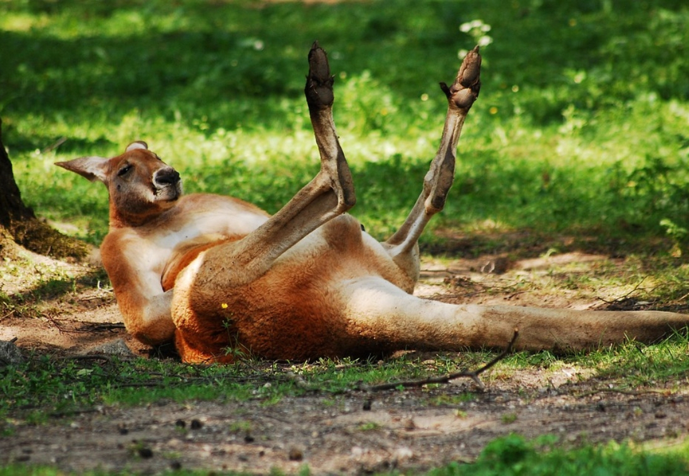
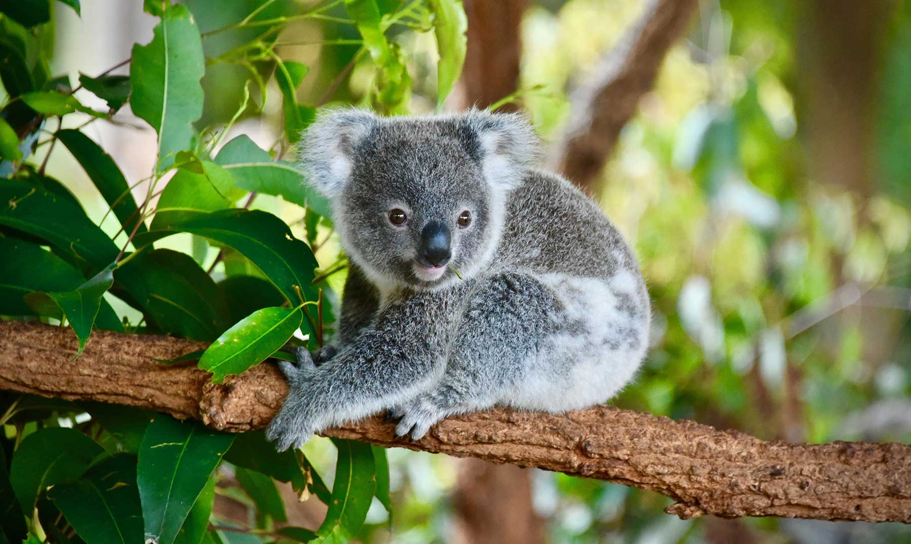

Canguro
El término canguro es el nombre común que se utiliza para designar a las especies de mayor tamaño de la subfamilia Macropodinae, tal como el término ualabí se utiliza para denominar a las de menor tamaño. Se utiliza también a veces en un sentido más amplio, o extenso, para referirse a casi todos los miembros de la familia de los macrópodos. Sin embargo, el término no responde a una clasificación científica, por lo que especies pertenecientes a un mismo género (agrupación de especies estrechamente relacionadas entre sí) pueden ser llamadas canguro, ualabí o ualarú, sólo dependiendo de su tamaño. Por ejemplo, Macropus parma es conocido como el ualabí de Parma,1 mientras que Macropus antilopinus, es denominado indistintamente como canguro antílope o ualarú antílope.
Quokka

Es un pequeño canguro del tamaño de un gato doméstico. Como otros marsupiales de la familia Macropodiae (como los canguros), el quokka es herbívoro y principalmente nocturno. Se puede encontrar en algunas pequeñas islas de la costa de Australia Occidental, en particular, en la isla de Rottnest justo al lado de Perth, e isla de Bald cerca de Albany.
Existe una pequeña colonia continental en el área protegida Two Peoples Bay, donde convive con Potorous gilbertii. No se han descrito subespecies. Es reconocido por ser un marsupial con características especiales de su genero, como su alto grado de sociabilidad y la constante alegría que se refleja en la apertura de su boca.
Koala
El koala (Phascolarctos cinereus) es una especie de marsupial diprotodonto de la familia Phascolarctidae, endémico de Australia.
Es el único representante existente de la familia Phascolarctidae y sus parientes vivos más cercanos son los wombats. Vive en las zonas costeras de las regiones este y sur australianas, en los estados de Queensland, Nueva Gales del Sur, Victoria y Australia Meridional. Es fácilmente reconocible por su cuerpo robusto sin cola, cabeza grande con orejas redondas y peludas y nariz grande en forma de cuchara. Mide entre 60 y 85 cm y pesan de 4 a 15 kg. El color de su pelaje va del gris plata al marrón chocolate. Las poblaciones septentrionales suelen ser de menor tamaño y de un color más claro que las del sur, por lo que se cree que puedan ser una subespecie separada, aunque esta posibilidad está en discusión.